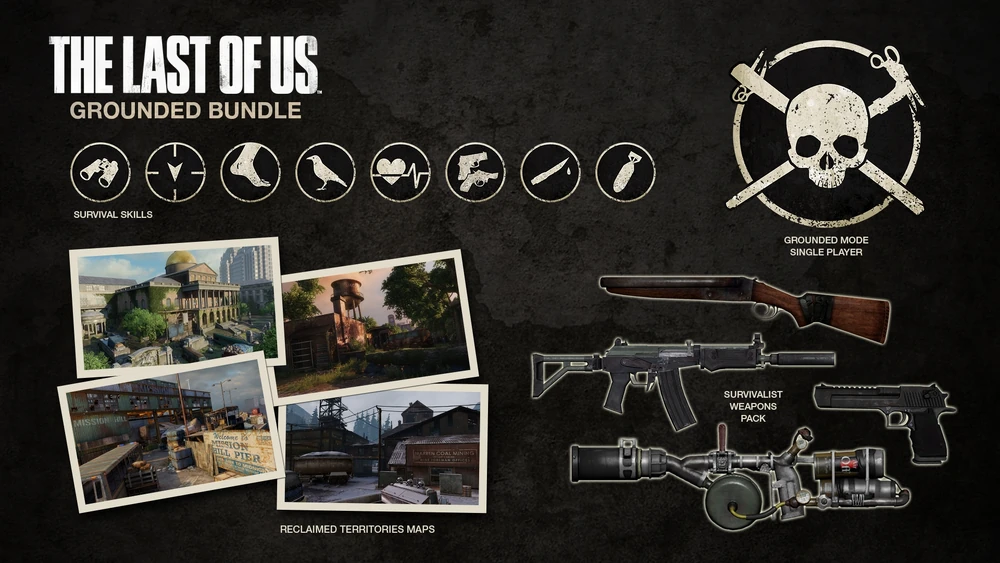

содержание
Возвращенные территории
Возвращенные территории

Возвращенные территории — третье и последнее DLC для Одни из Нас (англ. The Last of
Us). Пак содержит новое оружие, новые навыки выживания, новый режим для одиночной игры и 4 новые
карты для сетевой игры. Выпущен 7 мая 2014 года.
Новый режим под названием «Реализм», по словам разработчиков: «Самое сложное испытание, с которым вы встретитесь, когда вы попытаетесь пройти The Last of Us». ИИ был улучшен; стал намного умнее, и патронов, и ингредиентов для крафта стало намного меньше. «Прохождение игры на «Реализме» будет одним из самых сложных трофеев, который вы когда либо получали».
DLC содержит 4 новые карты для сетевой игры:
Помимо новых умений, в мультиплеер будет добавлен набор нового оружия под названием Survivalist Weapon Bundle, который можно будет приобрести за $5.99 (либо скачать бесплатно, если приобретен Сезонный пропуск). В входит:
Все 4 оружия могут быть добавлены в слот для Purchasable Weapon и куплены во время игры за детали. Кроме того, все игроки получат новый вид оружия, автомат, абсолютно бесплатно, независимо от того, был ли куплен сезонный пропуск или нет. Автомат представляет собой длинноствольное оружие с режимом одиночной стрельбы и будет очень легка в использовании. Идеально подойдет как для новичков, так и для прожженных опытом ветеранов.
Реализм
Новый режим под названием «Реализм», по словам разработчиков: «Самое сложное испытание, с которым вы встретитесь, когда вы попытаетесь пройти The Last of Us». ИИ был улучшен; стал намного умнее, и патронов, и ингредиентов для крафта стало намного меньше. «Прохождение игры на «Реализме» будет одним из самых сложных трофеев, который вы когда либо получали».
Карты
DLC содержит 4 новые карты для сетевой игры:
- Верфь;
- Водонапорная башня;
- Угольная шахта;
- Капитолий.
Умения
- Набор ситуативных навыков выживания;
- Набор профессиональных навыков выживания.
Оружие
Помимо новых умений, в мультиплеер будет добавлен набор нового оружия под названием Survivalist Weapon Bundle, который можно будет приобрести за $5.99 (либо скачать бесплатно, если приобретен Сезонный пропуск). В входит:
- "Спектр" - штурмовая винтовка с глушителем;
- Двустволка - классический и смертоносный двухзарядный дробовик;
- "Инфорсер" - очень точный и мощный пистолет;
- Гранатомет - оружие, стреляющее небольшими взрывными зарядами.
Все 4 оружия могут быть добавлены в слот для Purchasable Weapon и куплены во время игры за детали. Кроме того, все игроки получат новый вид оружия, автомат, абсолютно бесплатно, независимо от того, был ли куплен сезонный пропуск или нет. Автомат представляет собой длинноствольное оружие с режимом одиночной стрельбы и будет очень легка в использовании. Идеально подойдет как для новичков, так и для прожженных опытом ветеранов.